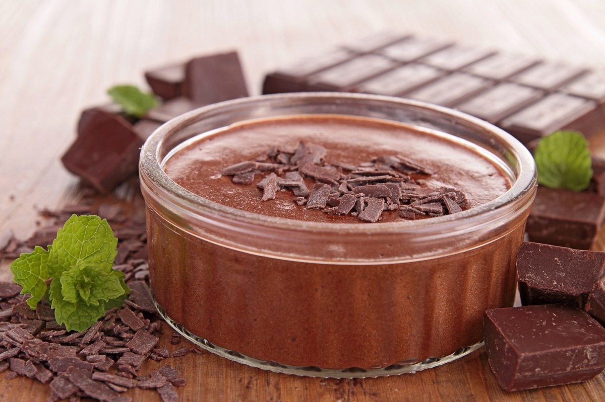

Sobremesas

Mousse de Chocolate
Um mousse cremoso e irresistível de chocolate.
Tempo de preparo: 30 minutos
Porções: 6
Ingredientes:
- 200g de chocolate meio amargo
- 3 ovos
- 200ml de creme de leite fresco
- 3 colheres de sopa de açúcar
- 1 colher de chá de essência de baunilha
Modo de Preparo:
- Derreta o chocolate em banho-maria e deixe esfriar um pouco.
- Separe as claras das gemas. Bata as claras em neve e reserve.
- Misture as gemas com o açúcar e a baunilha.
- Adicione o chocolate derretido às gemas e misture bem.
- Incorpore delicadamente as claras em neve à mistura de chocolate.
- Bata o creme de leite e incorpore à mistura.
- Distribua em taças e leve à geladeira por pelo menos 3 horas.

Tiramisu
Clássico italiano com camadas de mascarpone e café.
Tempo de preparo: 45 minutos
Porções: 8
Ingredientes:
- 500g de queijo mascarpone
- 4 ovos
- 100g de açúcar
- 300ml de café forte
- 200g de biscoitos tipo lady fingers
- Cacau em pó para polvilhar
Modo de Preparo:
- Separe as gemas das claras. Bata as gemas com o açúcar até ficar um creme claro.
- Adicione o mascarpone às gemas e misture bem.
- Bata as claras em neve e incorpore delicadamente ao creme de mascarpone.
- Mergulhe rapidamente os biscoitos no café e forme uma camada no fundo de um refratário.
- Cubra com metade do creme de mascarpone.
- Repita as camadas de biscoitos e creme.
- Polvilhe com cacau em pó e leve à geladeira por pelo menos 4 horas antes de servir.
Pavê de Morango
Camadas de biscoito, creme e morangos frescos.
Tempo de preparo: 40 minutos
Porções: 10
Ingredientes:
- 2 pacotes de biscoito maisena
- 1 lata de leite condensado
- 1 lata de creme de leite
- 1 xícara de leite
- 2 gemas
- 1 colher de sopa de amido de milho
- 500g de morangos frescos
Modo de Preparo:
- Prepare o creme: misture o leite condensado, as gemas, o amido e o leite. Leve ao fogo até engrossar.
- Retire do fogo, adicione o creme de leite e misture bem.
- Em um refratário, faça uma camada de biscoitos umedecidos no leite.
- Cubra com uma camada de creme e uma camada de morangos fatiados.
- Repita as camadas até terminar os ingredientes.
- Finalize com morangos inteiros para decorar.
- Leve à geladeira por pelo menos 4 horas antes de servir.